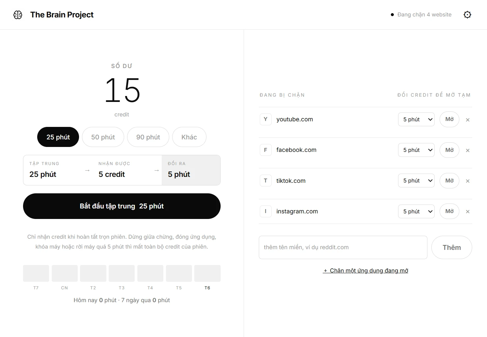

Bắt đầu một phiên
Chọn 25, 50, 90 phút hoặc nhập số phút tùy ý từ 1 đến 180. Trong lúc chạy, số credit tích lũy nhích lên từng giây trước mắt bạn.
Phiên bản 0.6.0 · Windows 10 / 11 · Miễn phí
YouTube, TikTok, Facebook — và cả ứng dụng, game đang chạy trên máy bạn — đều bị chặn. Muốn mở lại thì phải tự kiếm thời gian: 5 phút tập trung đổi được 1 phút giải trí. Không có nút tắt, không có cách xin thêm.

Vòng lặp
Không có danh sách việc cần làm, không có streak, không có huy hiệu. Chỉ một phép đổi: thời gian tập trung thành thời gian giải trí.
Đây chính là dải hiển thị nằm ngay trên nút bắt đầu trong ứng dụng — bạn biết trước mình sẽ nhận gì trước khi bấm.
Chọn 25, 50, 90 phút hoặc nhập số phút tùy ý từ 1 đến 180. Trong lúc chạy, số credit tích lũy nhích lên từng giây trước mắt bạn.
Credit chỉ vào ví khi phiên đi hết. Dừng giữa chừng, đóng ứng dụng, để máy ngủ, vặn đồng hồ hệ thống hay rời máy quá 5 phút — mất toàn bộ credit của phiên đó.
1 credit đổi được 1 phút. Credit bị trừ ngay khi xác nhận, kết thúc sớm không hoàn lại. Không tập trung được trong lúc còn thời gian đang mở, và ngược lại.
Lần cài đầu tiên được tặng sẵn 15 credit, để bạn có 15 phút dùng ngay khi cần gấp. Xóa toàn bộ dữ liệu thì số dư về 0 — không nhận lại quà.
Giao diện
Không màu sắc, không thẻ nổi, không biểu tượng thừa. Phân cấp bằng nét mảnh và khoảng trống. Trong lúc chạy phiên, cả màn hình chỉ còn một thứ để nhìn.
Nó chặn được gì
Chặn qua tiện ích Chrome hoặc Edge, nên nó vẫn chặn kể cả khi ứng dụng đã tắt. Chặn cả tên miền con. Hết thời gian mở, tab đang xem cũng bị chuyển về trang chặn.
Chọn từ danh sách ứng dụng đang mở — thấy tên quen thuộc chứ không phải đi tìm file .exe.
Khi nó lên tiền cảnh, một lớp phủ che nó lại.
Khóa cứng 30 phút, 1, 2 hoặc 4 tiếng. Không hủy được, không rút ngắn được. Trong lúc khóa: không đổi credit, không bỏ chặn, không xóa dữ liệu, không ngắt tiện ích.
Dải bảy ngày trên màn hình chính, bảng 14 ngày trong Cài đặt: số phút, số phiên hoàn tất, số phiên dở và credit nhận được mỗi ngày.
Không tài khoản, không máy chủ. Toàn bộ dữ liệu được mã hóa bằng safeStorage theo tài khoản Windows. Tiện ích đọc URL tab để áp dụng luật nhưng không gửi lịch sử duyệt web về ứng dụng.
Bản cài đặt NSIS ở mức tài khoản người dùng, không cần quyền quản trị. Đo trên máy thật: cửa sổ hiện ra sau 266–304 ms, màn hình sẵn sàng sau 349–379 ms.
Trung thực
Phần mềm chặn nào cũng có đường vòng. Đây là tất cả những đường vòng mà tôi biết trong sản phẩm này — liệt kê ra trước khi bạn tự phát hiện.
.exe là qua mặt được phần chặn ứng dụng.Cài đặt
Việc chặn website do tiện ích trình duyệt thực hiện, nên lần chạy đầu ứng dụng sẽ dừng ở màn hình hướng dẫn cho tới khi ghép nối xong — vì chưa ghép nối thì credit không có tác dụng gì.
Cài ở mức tài khoản người dùng nên không cần quyền quản trị. SmartScreen sẽ hiện cảnh báo vì file chưa ký số — chọn Thông tin khác → Vẫn chạy.
Ứng dụng tự mở đúng thư mục cần dùng ở bước sau.
Vào chrome://extensions (Edge: edge://extensions) →
bật Developer mode → Load unpacked → chọn thư mục vừa mở.
Nhấn Sao chép mã ghép nối trong ứng dụng, dán vào popup tiện ích rồi kết nối. Xong bước này màn hình tự chuyển sang giao diện chính.
Chỉ phải làm một lần. Mã ghép nối được giữ lại, nên các lần mở ứng dụng sau tiện ích tự kết nối lại sau khoảng hai giây — không phải ghép nối lại.
npm.cmd ci
npm.cmd startCần Node.js. Ứng dụng dùng Electron 44.
Giá
Hôm nay không tính năng nào bị khóa và không ai bị giới hạn gì. Về sau sẽ có bản Pro, nhưng vòng lặp cốt lõi — tập trung, kiếm credit, mở khóa — sẽ miễn phí vĩnh viễn. Nó là thứ khiến người ta kể cho bạn bè; đưa nó vào sau tường phí là tự cắt kênh lan truyền duy nhất.
Không có cập nhật tự động, nên cách duy nhất để biết bản mới ra là để lại email. Chỉ dùng để báo bản phát hành. Không quảng cáo, không chia sẻ cho ai.